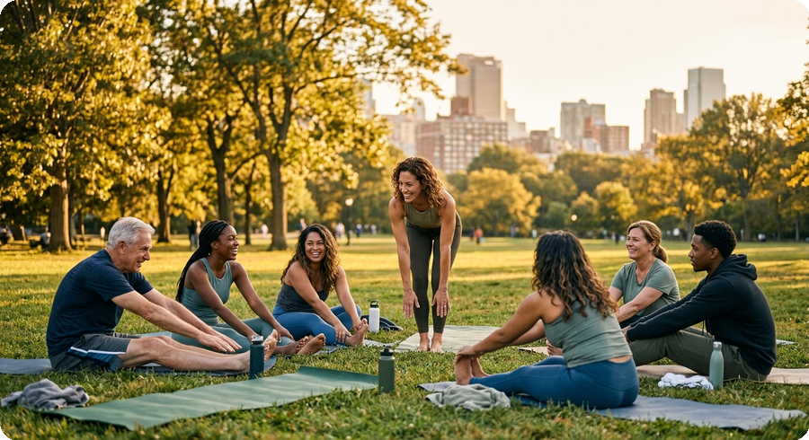
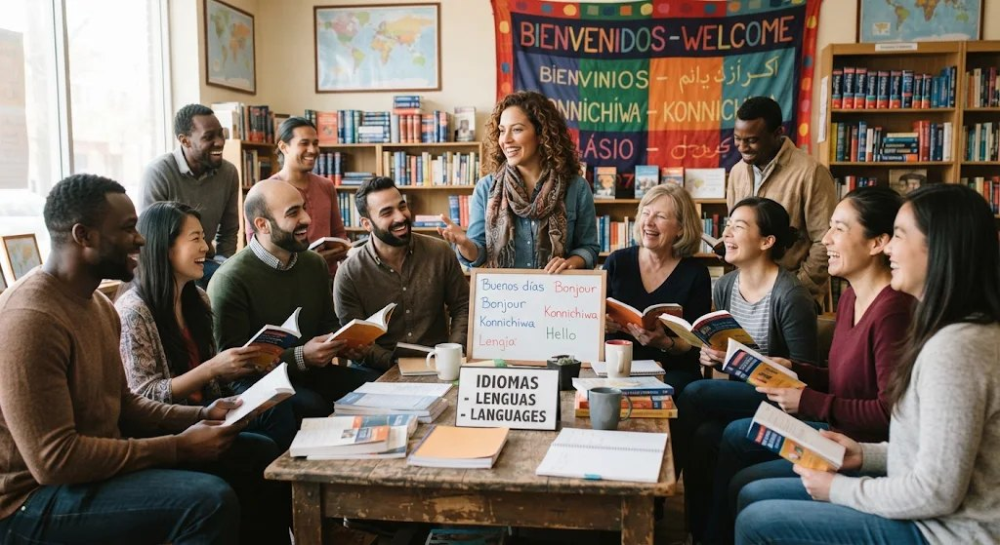
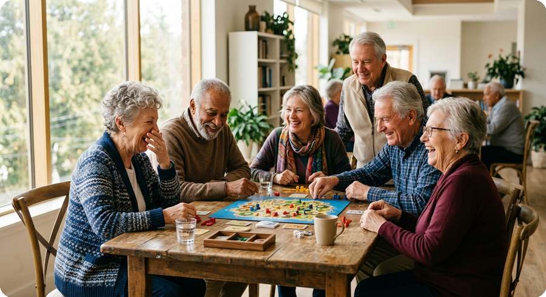
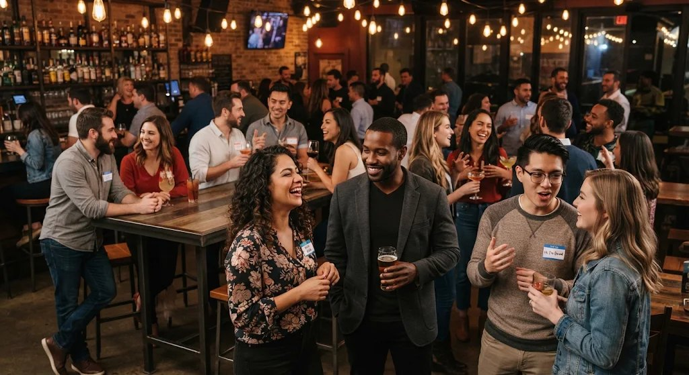
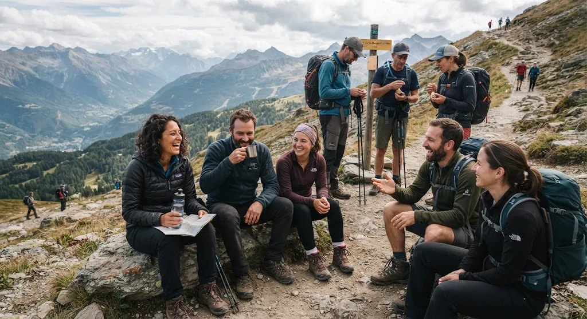
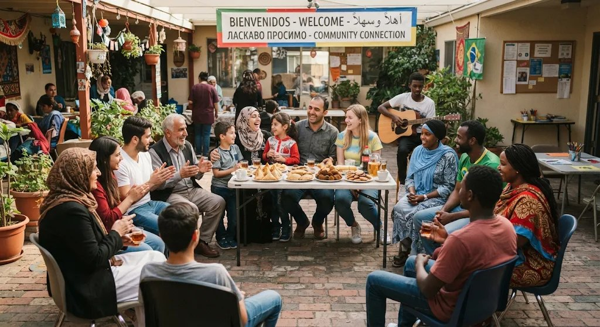
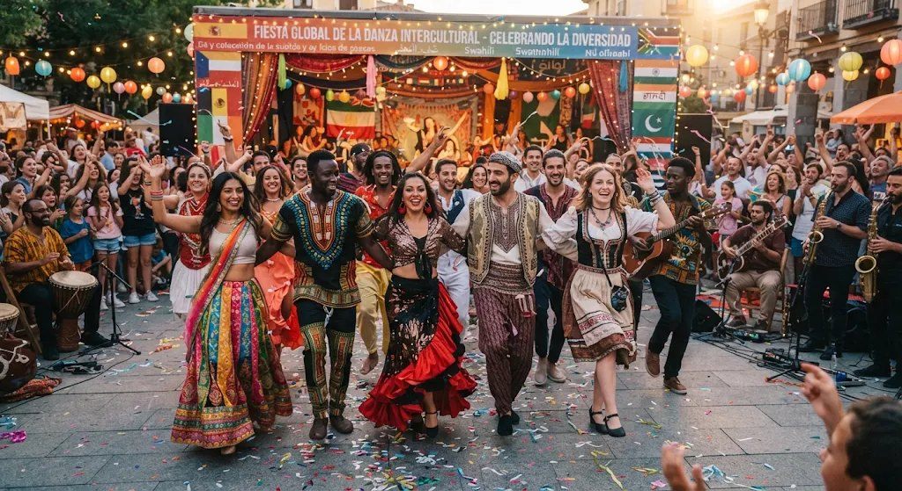
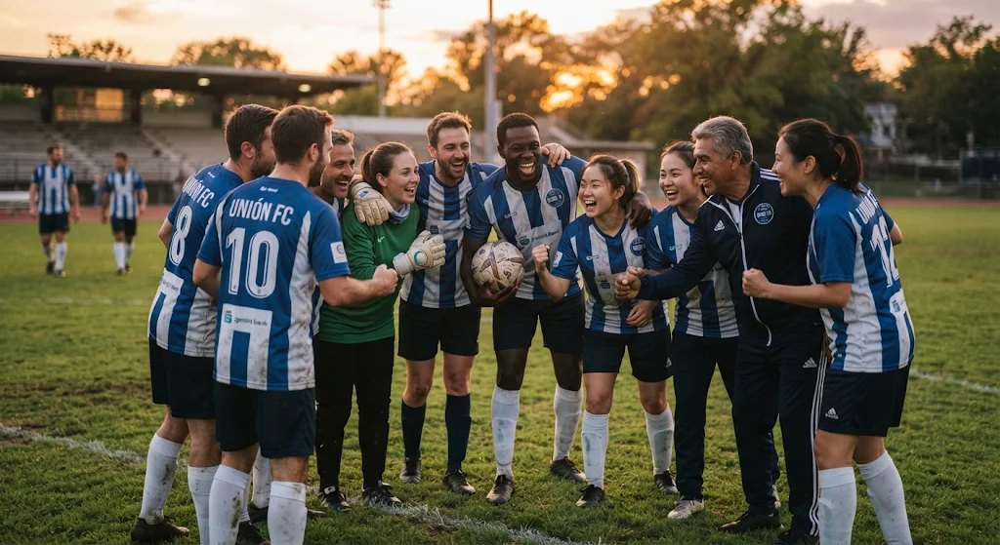

Pour les professionnels Para profesionales For professionals
Un espace pour faire grandir ton groupe Un espacio para hacer crecer tu grupo A space to grow your group
Que tu animes des groupes de soutien, des cours, des ateliers ou des rencontres communautaires — voici des scénarios d'usage courants de Vrytify, selon le type d'activité. Ya sea que facilites grupos de apoyo, cursos, talleres o encuentros comunitarios — aquí tienes escenarios de uso comunes de Vrytify, según el tipo de actividad. Whether you facilitate support groups, classes, workshops, or community meetups — here are common usage scenarios for Vrytify, based on activity type.
Les scénarios ci-dessous sont des exemples illustratifs d'usage, pas des témoignages de clients réels. Los escenarios a continuación son ejemplos ilustrativos de uso, no testimonios de clientes reales. The scenarios below are illustrative usage examples, not testimonials from real clients.
Psychologues et facilitateur·rice·s de groupes de soutienPsicólogos y facilitadores de grupos de apoyoPsychologists and support group facilitators
- Le défiEl retoThe challenge
- Garder le groupe connecté entre les séances, sans dépendre de fils de discussion WhatsApp difficiles à gérer.Mantener el grupo conectado entre sesiones, sin depender de cadenas de WhatsApp difíciles de gestionar.Keeping the group connected between sessions, without relying on hard-to-manage WhatsApp threads.
- Avec VrytifyCon VrytifyWith Vrytify
- Une communauté permanente pour publier les prochaines rencontres et gérer les inscriptions, avec le niveau de confidentialité que ce type d'espace exige.Una comunidad permanente para publicar los próximos encuentros y gestionar inscripciones, con el nivel de privacidad que este tipo de espacio exige.A permanent community to post upcoming meetings and manage sign-ups, with the level of privacy this kind of space requires.
- Ce qui changeLo que cambiaWhat changes
- Une continuité réelle entre les séances, et une visibilité auprès des personnes de la région qui cherchent ce type d'accompagnement.Continuidad real entre sesiones, y visibilidad ante personas de la zona que buscan este tipo de acompañamiento.Real continuity between sessions, and visibility to people nearby looking for this kind of support.

Instructeur·rice·s de conditionnement physique et bien-êtreInstructores de fitness y bienestarFitness and wellness instructors
- Le défiEl retoThe challenge
- Remplir chaque séance sans dépendre uniquement du bouche-à-oreille, et simplifier l'organisation des inscriptions.Llenar cada sesión sin depender solo del boca a boca, y simplificar la organización de las inscripciones.Filling each session without relying solely on word of mouth, and simplifying how registrations are organized.
- Avec VrytifyCon VrytifyWith Vrytify
- Découverte par proximité réelle, billets QR intégrés, et un panneau de statistiques pour voir ce qui fonctionne.Descubrimiento por cercanía real, boletos QR integrados, y un panel de estadísticas para ver qué funciona.Discovery based on real proximity, built-in QR tickets, and an analytics panel to see what's working.
- Ce qui changeLo que cambiaWhat changes
- Plus de participants réguliers, et moins de temps perdu en logistique.Más participantes constantes, y menos tiempo perdido en logística.More consistent participants, and less time lost on logistics.

Animateur·rice·s de groupes de langues et d'échange linguistiqueAnimadores de grupos de idiomas e intercambio lingüísticoLanguage group and language exchange hosts
- Le défiEl retoThe challenge
- Réunir régulièrement des personnes de langues différentes et les mettre à l'aise pour pratiquer, sans dépendre de listes de courriels ou de messages dispersés.Reunir con regularidad a personas de distintos idiomas y hacer que se sientan cómodas practicando, sin depender de listas de correo ni de mensajes dispersos.Regularly bringing together people who speak different languages and making them comfortable practicing, without relying on email lists or scattered messages.
- Avec VrytifyCon VrytifyWith Vrytify
- Une application trilingue dès le départ (FR/ES/EN), une communauté permanente pour publier chaque rencontre et gérer les inscriptions, et la découverte par proximité réelle.Una app trilingüe desde el día uno (FR/ES/EN), una comunidad permanente para publicar cada encuentro y gestionar inscripciones, y descubrimiento por cercanía real.A trilingual app from day one (FR/ES/EN), a permanent community to post each meeting and manage sign-ups, and discovery based on real proximity.
- Ce qui changeLo que cambiaWhat changes
- Un groupe stable qui pratique ensemble, pas un événement isolé, et de nouvelles personnes qui trouvent la porte d'entrée.Un grupo estable que practica junto, no un evento aislado, y personas nuevas que encuentran la puerta de entrada.A stable group that practices together, not a one-off event, and new people who find the way in.
Coachs en art oratoire et développement personnelCoaches de oratoria y desarrollo personalPublic speaking and personal development coaches
- Le défiEl retoThe challenge
- Bâtir un groupe de pratique récurrent, pas seulement des ateliers isolés sans suite.Construir un grupo de práctica recurrente, no solo talleres sueltos sin continuidad.Building a recurring practice group, not just standalone workshops with no follow-through.
- Avec VrytifyCon VrytifyWith Vrytify
- Une communauté permanente et des outils d'organisation (duplication d'événements, liste d'attente, annonces) pour maintenir des séances régulières sans tout reconstruire à chaque fois.Una comunidad permanente y herramientas de organización (duplicar eventos, lista de espera, anuncios) para sostener sesiones regulares sin reconstruir todo cada vez.A permanent community plus organizer tools (event duplication, waitlist, announcements) to keep regular sessions running without rebuilding everything each time.
- Ce qui changeLo que cambiaWhat changes
- Un espace de pratique qui se renforce séance après séance, appuyé par un historique et un score de confiance.Un espacio de práctica que se fortalece sesión tras sesión, respaldado por un historial y puntaje de confianza.A practice space that strengthens session after session, backed by a history and trust score.
Organisateur·rice·s de rencontres LGBTQ2+Organizadores de encuentros LGBTQ2+LGBTQ2+ meetup organizers
- Le défiEl retoThe challenge
- Créer un espace de rencontre sûr et récurrent, surtout en dehors des grands centres urbains où les options sont limitées.Crear un espacio de encuentro seguro y recurrente, especialmente fuera de los grandes centros urbanos donde las opciones son limitadas.Creating a safe, recurring meeting space, especially outside major urban centers where options are limited.
- Avec VrytifyCon VrytifyWith Vrytify
- Des communautés géolocalisées et permanentes, avec des outils de modération et des normes claires de non-discrimination dès la base de la plateforme.Comunidades geolocalizadas y permanentes, con herramientas de moderación y normas claras de no discriminación desde la base de la plataforma.Geolocated, permanent communities, with moderation tools and clear non-discrimination standards built into the platform's foundation.
- Ce qui changeLo que cambiaWhat changes
- Un point de rencontre stable pour celles et ceux qui cherchent une connexion authentique, près de chez eux.Un punto de encuentro estable para quienes buscan conexión genuina, cerca de casa.A stable meeting point for people seeking genuine connection, close to home.

Organisateur·rice·s d'activités pour personnes aînéesOrganizadores de actividades para personas mayoresActivity organizers for older adults
- Le défiEl retoThe challenge
- Organiser des rencontres régulières qui combattent l'isolement, avec un outil simple à utiliser.Organizar encuentros regulares que combatan el aislamiento, con una herramienta simple de usar.Organizing regular meetups that fight isolation, with a tool that's simple to use.
- Avec VrytifyCon VrytifyWith Vrytify
- Une interface claire, des événements simples à organiser, et des communautés qui restent actives entre deux rencontres.Una interfaz clara, eventos simples de organizar, y comunidades que permanecen activas entre un encuentro y otro.A clear interface, events that are simple to organize, and communities that stay active between meetups.
- Ce qui changeLo que cambiaWhat changes
- Une participation soutenue et un vrai réseau social qui se construit dans le temps, pas seulement un événement ponctuel.Participación sostenida y una red social real que se construye con el tiempo, no solo un evento puntual.Sustained participation and a real social network built over time, not just a one-off event.

Organisateur·rice·s de rencontres pour personnes célibatairesOrganizadores de encuentros para personas solterasOrganizers of singles meetups
- Le défiEl retoThe challenge
- Attirer de nouvelles personnes à chaque soirée et créer une ambiance où l'on se sent à l'aise dès l'arrivée, sans dépendre des applications de rencontre.Atraer a personas nuevas a cada encuentro y crear un ambiente donde todos se sientan cómodos desde que llegan, sin depender de las aplicaciones de citas.Attracting new people to every evening and creating an atmosphere where everyone feels at ease on arrival, without relying on dating apps.
- Avec VrytifyCon VrytifyWith Vrytify
- Découverte par proximité réelle, inscriptions et billets QR intégrés, et une communauté permanente pour garder le contact entre les soirées.Descubrimiento por cercanía real, inscripciones y boletos QR integrados, y una comunidad permanente para mantener el contacto entre encuentros.Discovery based on real proximity, built-in sign-ups and QR tickets, and a permanent community to stay in touch between evenings.
- Ce qui changeLo que cambiaWhat changes
- Des soirées mieux remplies, des participants qui reviennent, et moins de temps passé à relancer les gens un par un.Encuentros más llenos, participantes que vuelven y menos tiempo perdido insistiendo persona por persona.Fuller evenings, participants who come back, and less time spent following up with people one by one.

Guides et organisateur·rice·s de groupes de marche et de randonnéeGuías y organizadores de grupos de caminata y senderismoGuides and organizers of walking and hiking groups
- Le défiEl retoThe challenge
- Réunir un groupe fiable pour chaque sortie et communiquer vite les changements : météo, point de rendez-vous, niveau de difficulté.Reunir un grupo confiable para cada salida y comunicar rápido los cambios: clima, punto de encuentro, nivel de dificultad.Gathering a reliable group for every outing and quickly communicating changes: weather, meeting point, difficulty level.
- Avec VrytifyCon VrytifyWith Vrytify
- Une communauté par groupe où publier chaque sortie avec le lieu, la date et le niveau, gérer les inscriptions et limiter le nombre de places.Una comunidad por grupo donde publicar cada salida con lugar, fecha y nivel, gestionar inscripciones y limitar el número de cupos.A community per group to post each outing with the place, date and level, manage sign-ups and cap the number of spots.
- Ce qui changeLo que cambiaWhat changes
- Des sorties mieux préparées, des participants qui savent à quoi s'attendre, et un groupe qui se fidélise.Salidas mejor preparadas, participantes que saben qué esperar y un grupo que se fideliza.Better-prepared outings, participants who know what to expect, and a group that keeps coming back.

Organisateur·rice·s de communautés d'immigrants et de nouveaux arrivantsOrganizadores de comunidades de inmigrantes y recién llegadosOrganizers of immigrant and newcomer communities
- Le défiEl retoThe challenge
- Rejoindre les personnes nouvellement arrivées là où elles sont, dans leur langue, avant qu'elles ne se sentent isolées.Llegar a las personas recién llegadas donde están, en su idioma, antes de que se sientan aisladas.Reaching newcomers where they are, in their language, before they feel isolated.
- Avec VrytifyCon VrytifyWith Vrytify
- Une application trilingue dès le départ (FR/ES/EN), des communautés par origine ou par intérêt, et des rencontres près de chez soi.Una app trilingüe desde el día uno (FR/ES/EN), comunidades por origen o por interés, y encuentros cerca de casa.A trilingual app from day one (FR/ES/EN), communities by origin or interest, and meetups close to home.
- Ce qui changeLo que cambiaWhat changes
- Un lieu de référence pour se retrouver, s'entraider et rencontrer des gens de la région, et une communauté qui grandit dans le temps.Un lugar de referencia para encontrarse, ayudarse y conocer gente de la zona, y una comunidad que crece con el tiempo.A go-to place to meet, help each other and get to know people nearby, and a community that grows over time.

Professeur·e·s et organisateur·rice·s de groupes de danseProfesores y organizadores de grupos de baileDance teachers and organizers of dance groups
- Le défiEl retoThe challenge
- Remplir les cours et les soirées, y compris avec des débutants, et garder l'horaire à jour pour tout le monde.Llenar las clases y las noches de baile, también con principiantes, y mantener el horario al día para todos.Filling classes and dance nights, including beginners, and keeping the schedule up to date for everyone.
- Avec VrytifyCon VrytifyWith Vrytify
- Des événements récurrents, des inscriptions et des billets QR, et de la visibilité auprès des personnes proches qui cherchent une activité.Eventos recurrentes, inscripciones y boletos QR, y visibilidad ante personas cercanas que buscan una actividad.Recurring events, sign-ups and QR tickets, and visibility to nearby people looking for an activity.
- Ce qui changeLo que cambiaWhat changes
- Des cours et des soirées mieux remplis, une communauté de danseurs fidèle, et moins de logistique.Clases y noches mejor llenas, una comunidad de bailarines fiel y menos logística.Fuller classes and dance nights, a loyal community of dancers, and less logistics.

Organisateur·rice·s d'équipes et de ligues de soccer amateurOrganizadores de equipos y ligas de fútbol aficionadoOrganizers of amateur soccer teams and leagues
- Le défiEl retoThe challenge
- Réunir assez de joueurs pour chaque match ou entraînement, confirmer les présences à temps et accueillir les nouveaux sans y passer des heures.Reunir suficientes jugadores para cada partido o entrenamiento, confirmar asistencias a tiempo y recibir a los nuevos sin pasar horas en ello.Getting enough players for every match or practice, confirming attendance in time and welcoming newcomers without spending hours on it.
- Avec VrytifyCon VrytifyWith Vrytify
- Une communauté par équipe où publier chaque match avec le lieu, l'heure et le nombre de places, gérer les inscriptions, et être trouvé par les joueurs de la région.Una comunidad por equipo donde publicar cada partido con lugar, hora y número de cupos, gestionar inscripciones y ser encontrado por jugadores de la zona.A community per team to post each match with the place, time and number of spots, manage sign-ups, and be found by players nearby.
- Ce qui changeLo que cambiaWhat changes
- Des équipes complètes, moins de messages à relancer avant chaque match, et un groupe qui se fidélise saison après saison.Equipos completos, menos mensajes para insistir antes de cada partido y un grupo que se fideliza temporada tras temporada.Full teams, fewer messages to chase before each match, and a group that keeps coming back season after season.